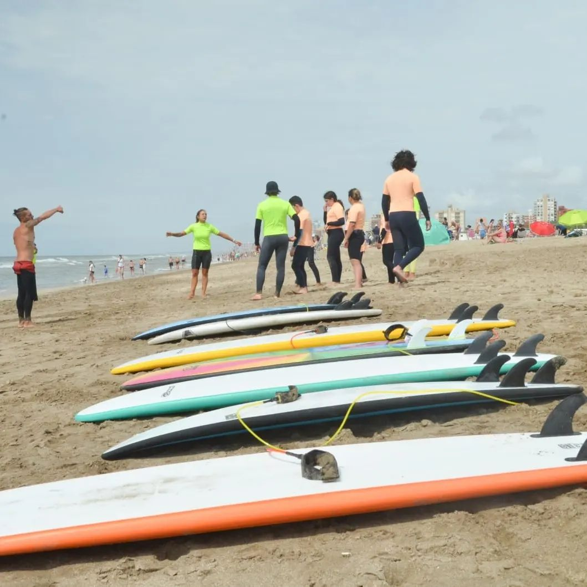
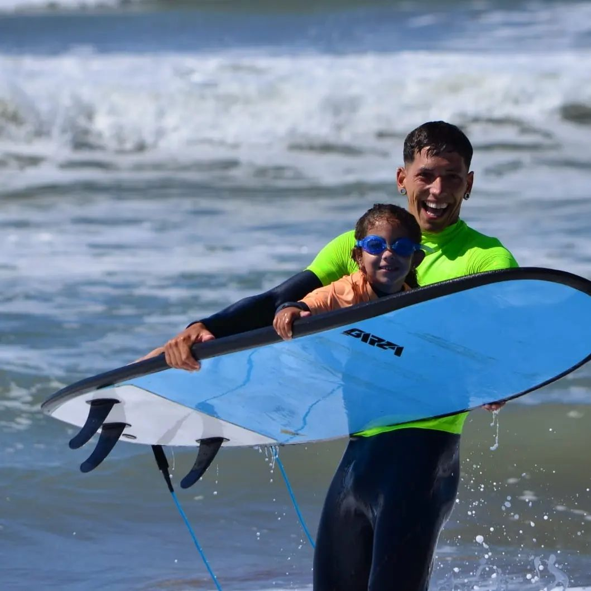
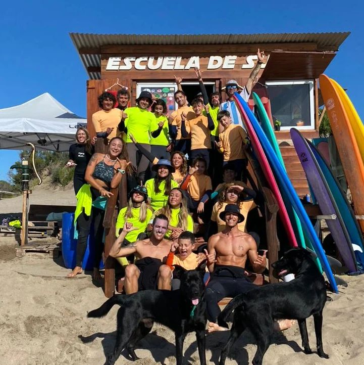

Coaching e Introduccion al Surf
North Shore(Argentina)
En la localidad de Villa Gesell, Costa Atlántica. Ubicada al norte de la ciudad balnearia podemos encontrarnos con la escuela de Surf y Bodyboard North Shore. Atendida por sus dueños, esta escuela con apenas 2 años de trayectoria cumple con los estándares de seguridad y pericia para dar los pasos iniciales y convertirse en un rider capaz de Surfear en cualquier condición de forma autónoma. La podes encontrar en Calle 307 y Playa.


